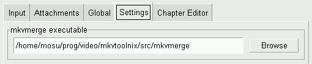
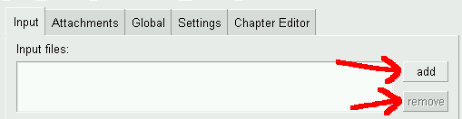
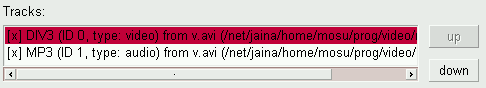
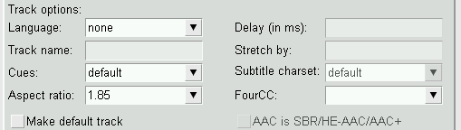
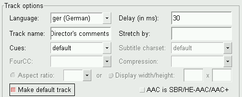
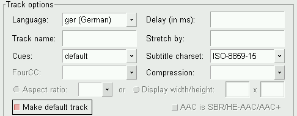
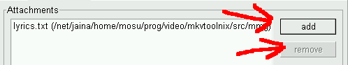
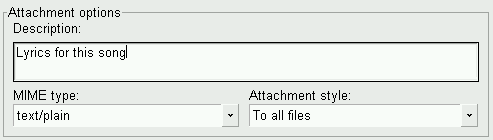
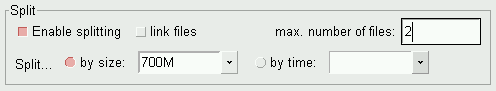

A guide to mkvmerge GUI (mmg)
Moritz Bunkus
Table of contents
-
Introduction
-
Setting up mkvmerge GUI
-
Creating Matroska files
-
The chapter editor
(Note: simply copied from
www.matroska.org.)
Matroska aims to become THE Standard of Multimedia Container
Formats. It was derived from a project called MCF, but differentiates
from it significantly because it is based on EBML (Extensible Binary
Meta Language), a binary derivative of XML. EBML enables the Matroska
Development Team to gain significant advantages in terms of future
format extensibility, without breaking file support in old
parsers.
If you need any more info please head over to Matroska's homepage.
mkvmerge and mkvmerge GUI (or just mmg) are
two programs created by Moritz
Bunkus. They're part of the mkvtoolnix
package. mkvmerge can read a lot of different multimedia files
and put their contents into Matroska files. Unfortunately this is a
command line program, and not everyone is comfortable working on the
command line. This is where mkvmerge GUI comes into play. It is
a GUI that provides the user with an intuitive but powerful interface
to mkvmerge.
Both programs are available for both Windows and GNU/Linux and
other Unix derivatives. The program is licensed under the GPL, so the
source code is available to anyone interested.
You can always find the latest version of mkvtoolnix on
Moritz Bunkus'
website. Windows users will have to download the runtime DLLs as
well as the mkvtoolnix binaries. Linux/Unix users will probably
download the sources and compile mkvtoolnix themselves.
This guide only focusses on the GUI part of these tools. All
command line options are explained in detail in mkvmerge's man
page/HTML page.
(Note: This section does not cover compilation and
installation. mkvmerge's own documentation and the
README files that are included in the mkvtoolnix
package.)
|
The only thing that mmg needs to know is the location of the
mkvmerge binary. Under normal circumstances it will be
found automatically. But if not then you can select the binary
to use on the Settings tab.
|
|

Use this button to select the path to the
mkvmerge program.
|
mkvmerge strictly differentiates between files and
tracks. An input file usually contains one or more
tracks. mkvmerge needs at least one input file and the
file name of the Matroska file it should create before it can do any
work. Starting with this minimal set of options the user can add more
input files, select advanced options for each track, apply some more
global options etc.
The typical basic steps are:
- Select some input files,
- set language options for the tracks,
- set the movie/file title,
- select the file to write to and
- start the muxing process.
|
When mmg starts up it shows the first and probably
most important tab: the input tab. Here you see four
different elements. The topmost input box lists all input
files. Directly under this box are options that apply
to the currently selected input file.
The two buttons to the right of the upper list box can be
used to add files to the list box with the + button and
to remove the selected entry with the - button.
|
|

Use these buttons to add and remove
files.
|
|
Once the user selects an input file in the upper list
box the second list box will contains all tracks that can
be read from this file. Each track is ENabled by default
and will be muxed into the resulting file. However, you can
change that by simply clicking on the checkbox right in front of
the track's name in the second list box. For each of these
tracks the user can select track specific options with the input
boxes and check boxes below the track listing. These options
will be described in the following sections.
|
|

Three enabled tracks and one disabled track. The fourth track will
not be copied into the output file.
|
Once the user has added and selected an input file he can set
options that apply to this specific file. At the moment only two such
options have been implemented: No chapters and No
attachments. These options tell mkvmerge not to copy any
chapters / attachments from the current source file.
More information about chapters can be found in the section about
the chapter editor in
this document and in mkvmerge's own documentation.
Depending on the type of the currently selected track (audio,
video, subtitles) and even depending on the contents of the track only
a subset of all the track specific options are availbale. The options
are:
Language: The user can select the language
for each track regardless of its type. This language is
coded in the ISO639-2 language code. The drop-down box
contains all ISO639-2 codes so the user does not have to
worry about selecting the wrong language code.Track name: The user can set a name for the
current track. This name is a free-form string. Practical
examples could be 'director's comments' or 'aeriel view of
Seattle'. Note that these names are not meant to contain the
movie title!Cues: The cues are for Matroska what
the index is for AVI files. They contain links to the key
frames. Usually this option should be left on the value
'default'. mkvmerge will automatically chose the best
method for any given track type. A full explanantion of
tracks can be found in mkvmerge's documentation.Aspect ratio: With this option the user can
set the aspect ratio that should be used upon playback. It
defaults to the aspect ratio that the movie was encoded with
but can be changed, e.g. for anamorphic encodings. The GUI
expects the format to be either a floating point number
(e.g. '2.33') or a fraction (e.g. '16/9').
This option is only available for video tracks.FourCC: Matroska does not normally store the
FourCC which is used in other containers to identify the
codec used. Matroska has its own format, called
CodecID, but it also has an AVI compatibility
mode. In thise mode the FourCC is also stored. With this
option the FourCC can be forced to a different
value. However, you cannot change the CodecID used by
mkvmerge.
This option is only available for video tracks.Delay (in ms): In some cases audio and video
are not synchronized properly. With this option the user can
offset the audio track by a given amount, either positive or
negative. mkvmerge will either remove samples at the
beginning or insert silence at the beginning to adjust the
track.
This option is available for audio and text subtitle tracks.Stretch by: In some cases audio and video
slowly drift apart during playback. This can be fixed by
supplying a factor of how much the timecodes should be
stretched by mkvmerge. If nothing is given then '1.0'
is assumed which does not alter the timecodes. Please note
that this option has not been implemented for all audio
track types yet.
This option is available for audio and text subtitle
tracks.Subtitle charset: Some text subtitle formats
do not store the charset that they were creted with. This is
important because text subtitles are auomatically converted
to the UTF-8 charset during muxing. mkvmerge will
normally assume that the system's current charset is the
same that the subtitle file was written in. But in case this
is not true the user can select the correct charset.
This option is only available for text subtitle tracks.Make default track: Matroska knows a flag
which tells the player that a specific track should be
preferred upon playback if the user does not chose another
one. Of course each track type has its own default
track - e.g. the default audio track is the English one, and
the default subtitle track is the French one. If no track is
set to be the default track then mkvmerge will
promote the first track of each type that it finds to be the
default track. This is consistent with the behaviour of
various media players.AAC is SBR/HE-AAC/AAC+: The new technology
called 'high efficiency AAC' has some drawbacks when it is
being stored in .AAC files: it is not possible
to detect the HE-AAC part for these files. Therefore the
user has to check this option manually if it applies. Please
note that this problem does not exist for HE-AAC stored in
.MP4 files.
|
|

Typical options for a video track

Typical options for an audio track

Typical options for a text subtitle track
|
|
Matroska files can also contain other files, called
attachments. This works basically just like with your
favourite email program. The idea is to provide additional
information about the file. Some examples could be cover
photos for a CD rip, additional background information in text
form about the movie or even some compressed fonts for the
subtitles.
Every attachment needs two things: the file name (obviously)
and the MIME type that should be associated with the file. The
usage is very easy and similar to adding files on the
input tab.
On the second tab of the GUI, the attachment tab, you
can add a file with the + button and remove the
selected attachment with the - button. Once an
attachment has been selected the other controls on this tab
will be available. You do have to select a MIME type for each
attachment, but the description is optional - although it is a
good idea to always provide a description. This makes it
easier for others to identify what you've attached to this
Matroska file.
The last option, attachment style, is only
evaluated when you also split the output into several
files. (Splitting in general is explained in the following
section.) If the option To all files is selected
then the current file will be attached to all output files
created. If the option Only to the first is
selected then the file is only attached to the very first
output file created.
|
|

Add and remove attachments with these buttons.

Typical options for an attachment
|
The third tab, Global, is packed full of options that apply
to the complete file and not just to one or more tracks.
|
File/segment title: This title is used for the
actual movie title, e.g. 'Vanilla Skies'.
|
|

Selecting a title for the movie
|
|
The Split section handles how the output file is
split into several smaller files. If no splitting is selected
then only one big file is generated. If splitting is activated
then you can tell mkvmerge to start a new output file
after either a specific amount of data has been written to the
current file or after a specific amount of time has
accumulated. The formats accepted are:
- For the size: A number optionally followed by the letter
'K', 'M' or 'G' indicating kilobytes (1024 bytes),
megabytes (1024 * 1024 bytes) or gigabytes (1024 * 1024 *
1024 bytes). Examples: '700M' or '100000K'.
- For the time: The format is either
HH:MM:SS
or a number followed by the letter 's' indicating a number
of seconds. Examples: '01:20:00' (split after 1 hour, 20
minutes) or '1800s' (split after 1800 seconds = 30
minutes).
Don't link: This option controls how
mkvmerge will handle splitting. A little explanation
about this feature:
Matroska supports file linking which simply says that a
specific file is the predecessor or successor of the current
file. To be precise, it's not really the files that are linked
but the Matroska segments. As most files will probably only
contain one Matroska segment I simply say 'file linking'
although 'segment linking' would be more appropriate.
Each segment is identified by a unique 128 bit wide segment
UID. This UID is automatically generated by
mkvmerge. The linking is done primarily via putting the
segment UIDs of the previous/next file into the segment header
information. mkvinfo prints these UIDs if it finds
them.
If a file is split into several smaller ones and linking is
used then the timecodes will not start at 0 again but will
continue where the last file has left off. This way the
absolute time is kept even if the previous files are not
available (e.g. when streaming). If no linking is used then
the timecodes should start at 0 for each file. By default
mkvmerge uses file linking. If you don't want that you
can turn it off by enabling this Don't link
checkbox.
Regardless of whether splitting is active or not the user can tell
mkvmerge to link the produced files to specific
UIDs. This is done by entering a valid segment UID into the
two input boxes, Previous segment UID and
Next segment UID. These options accept a segment
UID in the format that mkvinfo outputs: 16 hexadecimal
numbers between 0x00 and 0xff prefixed with '0x' each and
separated with spaces, e.g. 0x41 0xda 0x73 0x66 0xd9
0xcf 0xb2 0x1e 0xae 0x78 0xeb 0xb4 0x5e 0xca 0xb3
0x93. Alternatively a shorter form can be used: 16
hexadecimal numbers between 0x00 and 0xff without the '0x'
prefixes and without the spaces, e.g.
41da7366d9cfb21eae78ebb45ecab393.
If splitting is used then the first file is linked to the UID
given in the Previous segment UID input box, and
the last file is linked to the UID given in the Next
segment UID input box. If splitting is not used then
the one output file will be linked to both of the two
UIDs.
|
|

Typical options for splitting. Create two
files which will be approx. 700megs big.
|